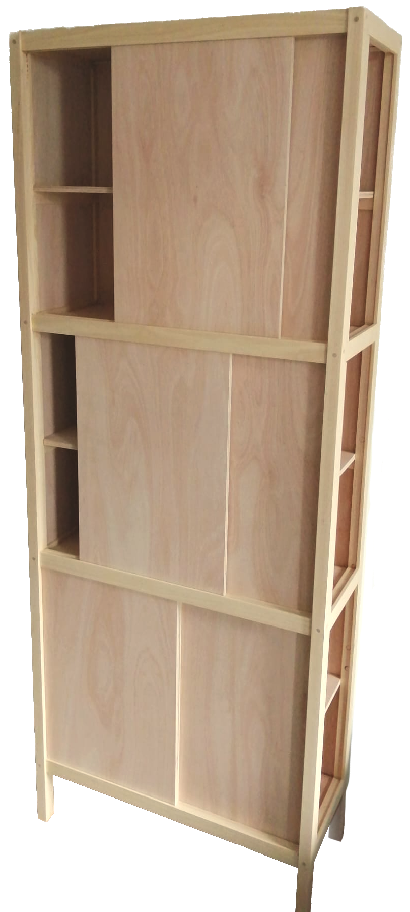

Willem Woudstra (NL, 1968) is een zelfstandig meubelmaker. Hij heeft zijn hele leven plezier gehad in het werken met hout en maakt nu meubels op verzoek. Hij biedt meubels op maat aan, gepersonaliseerd voor de eigenaar en de omgeving. Hij gebruikt verschillende soorten hout en technieken om elke opdracht te laten passen, en soms gooit hij er zelfs wat metaal bij als het bijdraagt aan het eindresultaat. Zijn stijl is geïnspireerd door eenvoud, en hij gebruikt vaak zwaluwstaartverbindingen. Neem een kijkje naar voorbeelden van zijn vorige werk en schroom niet om contact op te nemen met een specifieke vraag of verzoek!
